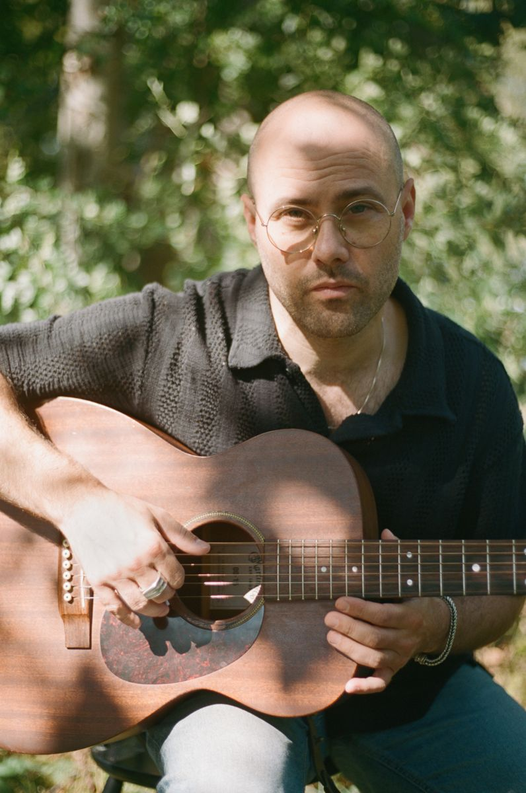
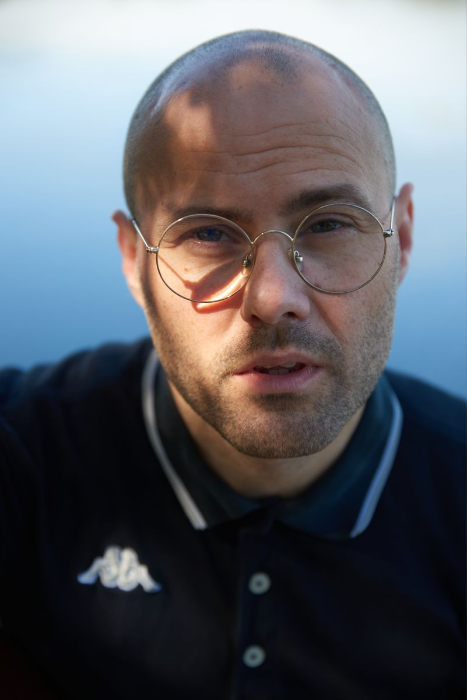
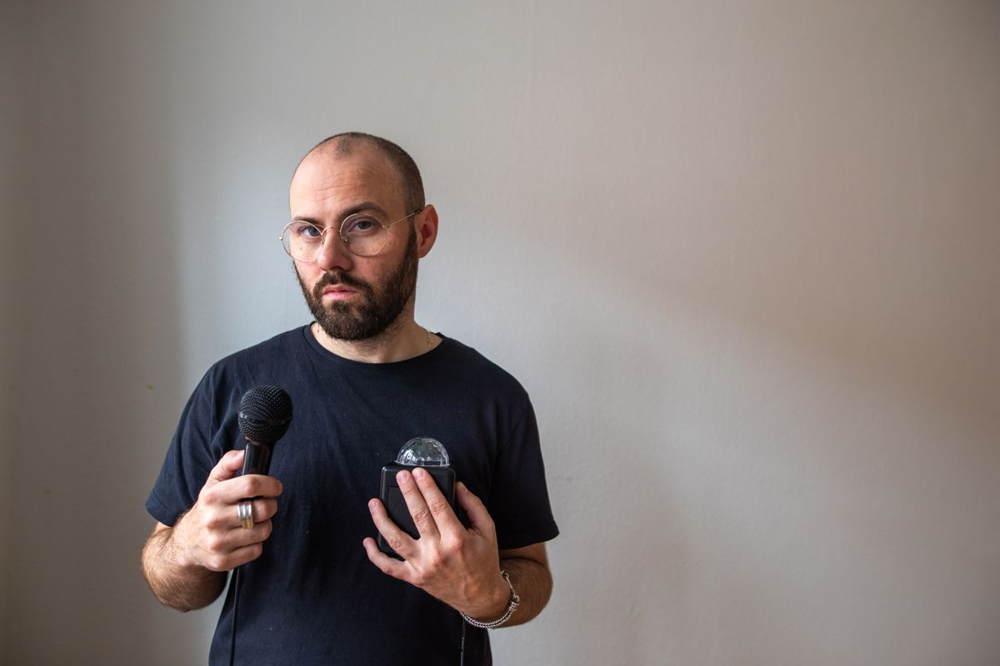
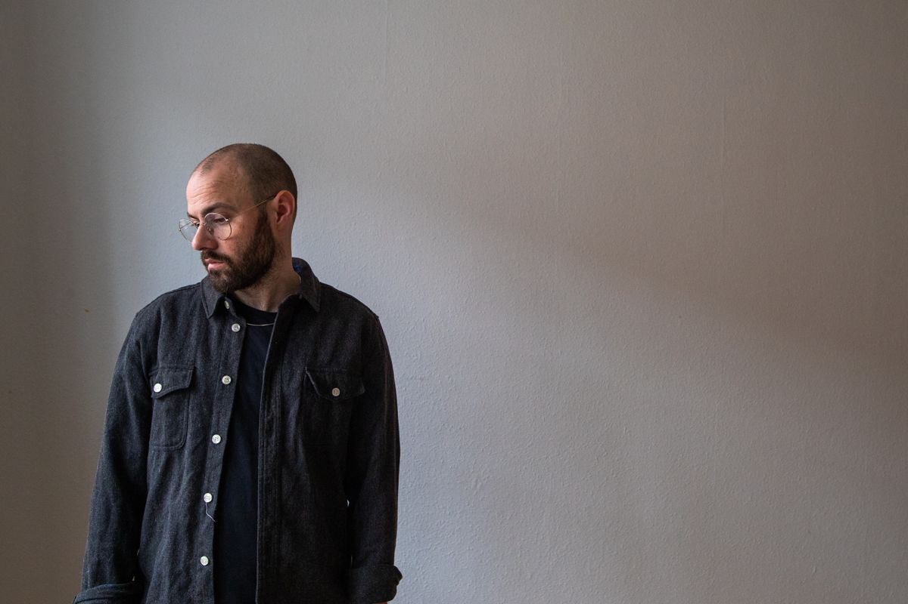

Pressemateriale
Marc Facchini

Foto: Sara Brendstrup


Foto: Sara Brendstrup


Foto: Mads Fisker


Foto: Mads Fisker

Fotoene må frit bruges i forbindelse med omtale af Marc Facchini, med kreditering af fotografen.
“Hypnotisk uskyldsrent. Fremragende kompositorisk udført. Vidunderligt drømmende og Kodak-momentarisk. […] Uden Titel er et fremragende 90’er-uskyldsværk til vores psykopat-aktive nutid.” Sådan skriver GAFFAs anmelder Adam Bouttai om Marc Facchinis seneste soloalbum.
Den dansk-italienske sangskriver, bosat i København, opvokset på en teaterskole i Bakkebølle og med en slægt bestående af alt fra håndværkere og læger til skuespillere og svindlere, bruger sin baggrund og sine omgivelser til at skrive sange, der kræver fordybelse. Sange om krop, finanser, forvandling, filosofi, religion, seksualitet, spiritualitet og død.
I starten af 2010’erne var Marc Facchini frontmand i det KarriereKanon-vindende rockband Mescalin Baby og senere i det genrebrydende artpop-projekt Mother Lewinsky. Siden 2015 har han med sine dansksprogede neo-folk-sange fortryllet publikum på alt fra store festivalscener til tætpakkede dagligstuer. Nu er Marc Facchini aktuel med sit sjette soloalbum, Uden Titel, der igen bringer den anmelderroste sangskriver rundt i hele landet. Det er en særligt intim og gribende liveoplevelse, du ikke vil gå glip af.
“For det er her, i hans kød, i hans inkarnation af nedgriflede sange, som en strålende performer med rødder i fortiden og topskud i nutiden, at det hele giver mening. Et menneske ytrer sig og mener hvert et fucking ord.”
- 2025Uden Titel · Sorte Plader
- 2022Breve fra Babylon · Sorte Plader
- 2020Ind i Evigheden · Sorte Plader
- 2018Himmelmekanik · MARFAC / The Orchard
- 2016Mørk Mandala · Idiot Disc Records
- 2015Vidunderlige Drømme · Idiot Disc Records
- 2014Alene med Marc Facchini (EP) · MARFAC